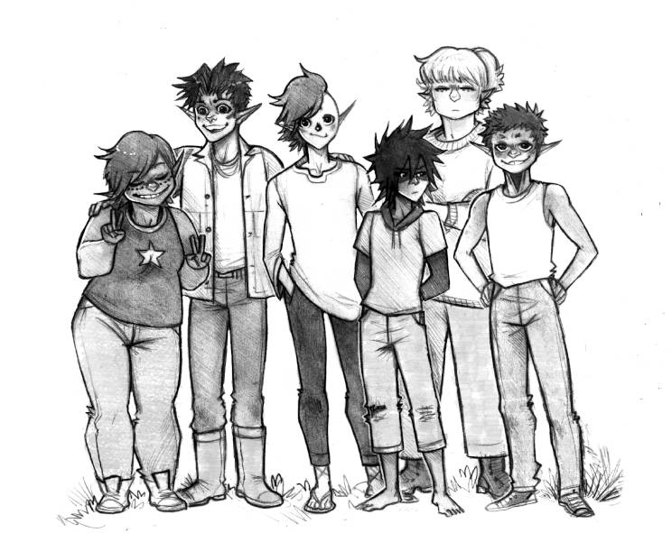
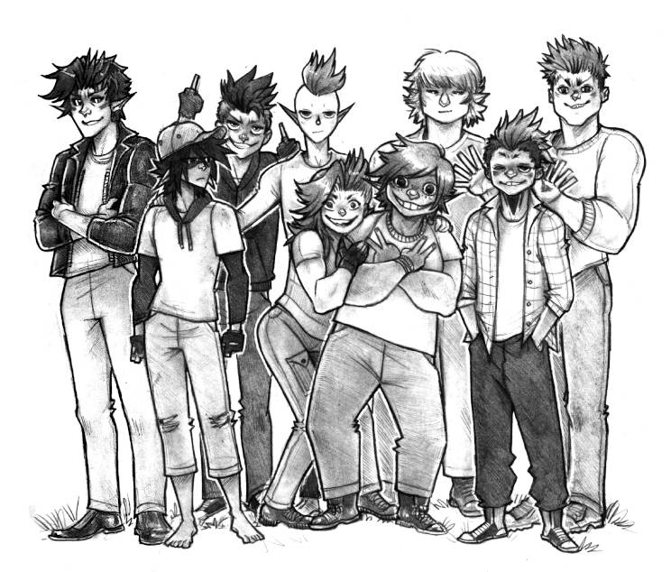
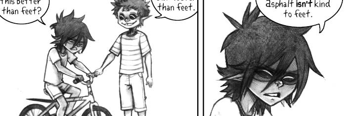
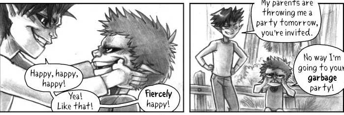

About
About Projects
Projects Books
Books Games
Games Stories
Stories Store
Store Notes
Notes How-to
How-to
In the early 1980's something in the Taiga(term used to refer to untouched wilderness) has started affecting humans, changing their physique, while hurting, killing, or disabling others.
A group of humans, touched by this phenomenon as kids, now spend all their time in the Taiga, sabotaging projects that threaten it under the name The Solomon's Devils, or Solo Devs for short.
Content
- On Worldbuilding
- What is Monkeywrenching?
- Characters
- Comics
+ Ruler of the Taiga
+ Kaizah
+ Shoes
+ Smile - Comic Archive

Hakum is drawn and shaded by hand with pencils. I scan the pages(see using a scanner under linux) and process them in Gimp. I made a font(tutorial) based on my handwriting, named Katkum, specifically for this comic.
On Worldbuilding
 It is not easy to flesh out stories. It is a fun, and highly iterative process. Nothing is set in stone, drawing out bits of the comic does not mean the story will remain the same. It is a way of playing with the characters, to get to know them and to further develop the world. This is what this comic is for me, drawing them out in various non-sequential situations is a way to discover a workable story. Keep this in mind while browsing this page.
It is not easy to flesh out stories. It is a fun, and highly iterative process. Nothing is set in stone, drawing out bits of the comic does not mean the story will remain the same. It is a way of playing with the characters, to get to know them and to further develop the world. This is what this comic is for me, drawing them out in various non-sequential situations is a way to discover a workable story. Keep this in mind while browsing this page.
"Tolkien, for all his vaunted designs, only got to The Good Stuff when he was IN it, really working the text of the novels. He could not worldbuild his way into a workable story; he had to muddle and discover and revise, just like the rest of us." [Source].
What is monkeywrenching?
"Monkeywrenching" is based on the US idiom "to throw a monkey wrench into..." which means to sabotage something. The term was coined by Edward Abbey (from the book The Monkeywrench Gang) and its come to mean, besides sabotage and damage to machines, any sabotage, activism, law-making, or law-breaking to preserve wilderness, wild spaces and ecosystems.
Characters
Above is an image featuring the Solomon's Devils in the early days of the group, with the founding members all present: Yeni, Seir, Kaddali, Dae, Ananuk and Hakazi.
Below is the more recent version of the gang, a few years later. From left to right: Seir, Dae, Sy, Kaddali, Kim, Yeni, Ananuk, Hakazi and Ikkard. Seir isn't actually part of the Solo Devs anymore at this point, he works with them loosely, but I thought I'd throw him in anyway to show how he has changed.
Other characters featured in the comics include Caleb, Jak, Nemerald, Rye, and Camp.
Comics
Read the comic [Complete, 1/1 pages]
{kind=link}
Read the comic [Complete, 4/4 pages]

Read the comic [Complete, 8/8 pages]

Read the comic [Complete, 6/6 pages]
Comic Archives
I made a bunch of other comics using these same characters, but the concept was different(and now isn't canon). You can still view them in the hakum archive.
These comics were also drawn by hand, but inked instead of pencilled, and were shaded digitally. I stepped away from shading digitally because I found it tedious, while I could spend hours shading by hand. The less time I spent on the computer, the better.